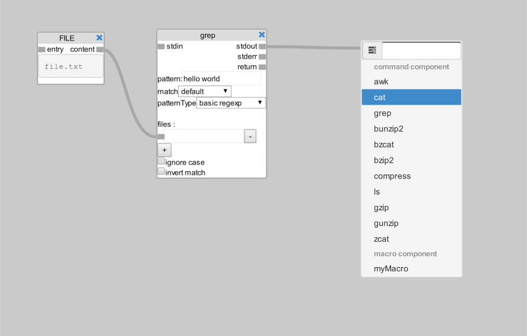
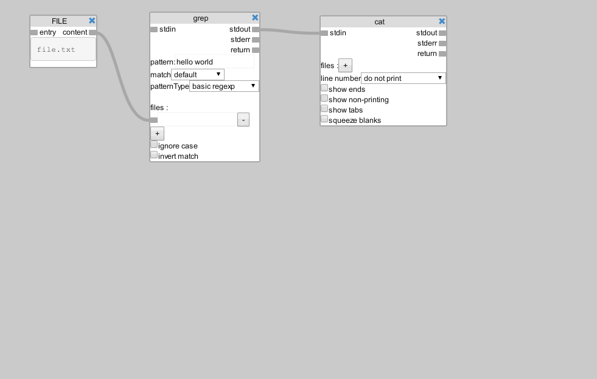
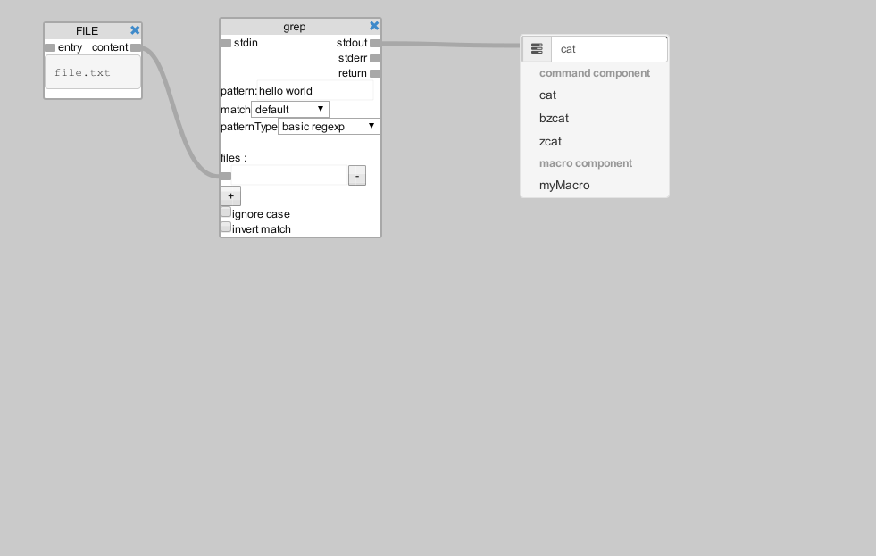
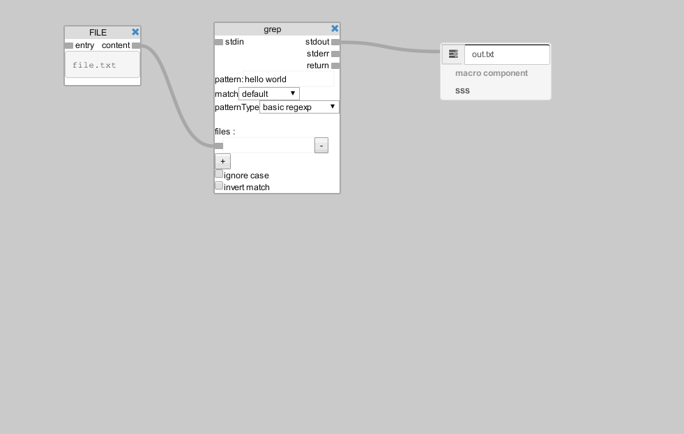
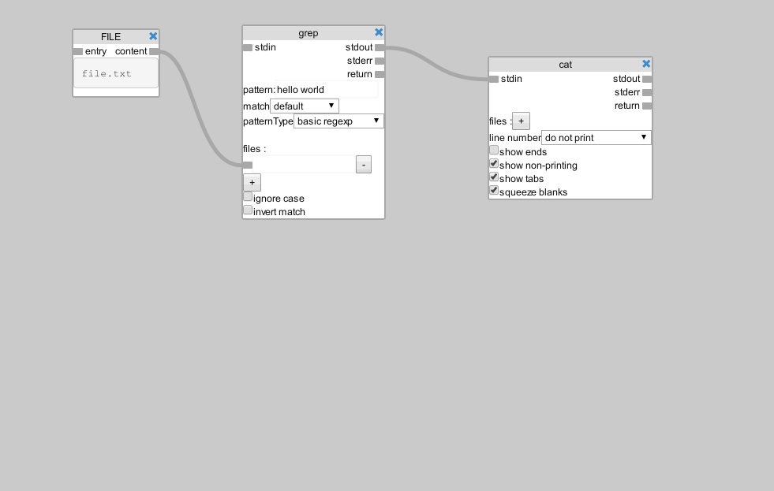

<!DOCTYPE html>
<html>
  <head>
    <title>Demo Week 5 - Omar Castro</title>
    <meta charset="utf-8">
    <link rel="stylesheet" href="css/bootstrap.min.css">
    <link rel="stylesheet" href="css/ui-layout.css">
    <link rel="stylesheet" href="css/style.css">
    <script src="/socket.io/socket.io.js"></script>
  </head>
  <body ng-app="demo" style="margin:0;height:100%">
    <div ng-controller="data-flow" style="height:100%" class="TransformResults">
      <div style="height:100%">
        <div graph-model="res.visualData" options="options" class="visual-builder border data-flow"></div>
      </div>
    </div>
  </body>
  <script src="js5/parser.js"></script>
  <script src="js/jquery-2.1.0.min.js"></script>
  <script src="js/angular.min.js"></script>
  <script src="js/ui-bootstrap-tpls.min.js"></script>
  <script src="js/ui-layout.min.js"></script>
  <script src="js/pointerevents.min.js"></script>
  <script src="js5/demoApp.js"></script>
  <script type="text/ng-template" id="myModalContent.html">
    <div class="modal-header">
      <h3>Macro Creation</h3>
    </div>
    <div class="modal-body">
      <form role="form" class="form-horizontal">
        <div class="form-group">
          <label for="name" class="col-sm-2 control-label">Name</label>
          <div class="col-sm-10">
            <input type="text" id="name" ng-model="form.name" placeholder="Name" class="form-control">
          </div>
        </div>
        <div class="form-group">
          <label for="descr" class="col-sm-2 control-label">Description</label>
          <div class="col-sm-10">
            <textarea id="descr" rows="3" ng-model="form.description" class="form-control"></textarea>
          </div>
        </div>
        <div class="form-group">
          <label for="name" class="col-sm-2 control-label">Command</label>
          <div class="col-sm-10">
            <input type="text" id="command" ng-model="form.command" placeholder="e.g. cat -A hello.txt | grep &quot;world&quot;" class="form-control">
          </div>
        </div>
      </form>
    </div>
    <div class="modal-footer">
      <button ng-click="ok()" class="btn btn-primary">Create Macro</button>
      <button ng-click="cancel()" class="btn btn-warning">Cancel</button>
    </div>
  </script>
  <script type="text/ng-template" id="MacroEditModal.html">
    <div class="modal-header">
      <h3>Macro</h3>
    </div>
    <div class="modal-body">
      <form role="form" class="form-horizontal">
        <div class="form-group">
          <label for="name" class="col-sm-2 control-label">Name</label>
          <div class="col-sm-10">
            <input type="text" id="name" ng-model="form.name" placeholder="Name" class="form-control">
          </div>
        </div>
        <div class="form-group">
          <label for="descr" class="col-sm-2 control-label">Description</label>
          <div class="col-sm-10">
            <textarea id="descr" rows="3" ng-model="form.description" class="form-control"></textarea>
          </div>
        </div>
      </form>
    </div>
    <div class="modal-footer">
      <button ng-click="view()" class="btn btn-primary">View Macro</button>
      <button ng-click="edit()" class="btn btn-primary">Edit Macro</button>
      <button ng-click="delete()" class="btn btn-error">Delete Macro</button>
      <button ng-click="cancel()" class="btn btn-warning">Cancel</button>
    </div>
  </script>
  <script type="text/ng-template" id="sidebarModel.html">
    <ul class="nav nav-pills nav-stacked">
      <li class="nav-header">Commands</li>
      <li ng-repeat="command in implementedCommands"><a data-command="{{command}}" href="#" ng-bind="command"></a></li>
      <li class="nav-header">Macros</li>
      <li sidebar-macro-component="name" ng-repeat="(name, val) in $parent.graphModel.macros"></li>
      <li class="nav-header">Utilities</li>
      <li><a new-macro ng-click="open()">New Macro</a></li>
    </ul>
  </script>
  <script type="text/ng-template" id="graphTemplate.html">
    <div class="popupArea">
      <div class="popup dropdown open">
        <ul class="dropdown-menu well">
          <form ng:submit="graph.popupSubmit(popupText)">
            <div class="input-group input-group-sm"><span class="input-group-addon glyphicon glyphicon-tasks"></span>
              <input type="text" ng-model="popupText" class="form-control">
            </div>
          </form>
          <li ng-show="comms.length" class="dropdown-header"><b>command component</b></li>
          <li ng-class="cl" ng-mouseenter="cl = 'active'" ng-mouseleave="cl = ''" ng-repeat="foo in comms = (implementedCommands | filter:popupText)"><a ng-click="graph.popupSubmit(foo)">{{foo}}</a></li>
          <li ng-show="comms2.length &amp;&amp; isRootView()" class="dropdown-header"><b>macro component</b></li>
          <li ng-class="cl" ng-mouseenter="cl = 'active'" ng-mouseleave="cl = ''" ng-repeat="foo in comms2 = (macroViewList() | filter:popupText)"><a ng-click="graph.popupSubmit(foo)">{{foo}}</a></li>
        </ul>
      </div>
      <div ng-if="sel.open" ng-style="{transform:sel.transform, WebkitTransform:sel.transform, MsTransform:sel.transform}" class="selectpopup dropdown open">
        <ul class="dropdown-menu">
          <li ng-repeat="c in options[sel.data.exec][sel.name]"><a ng-click="graph.selectSelection(c)"><span ng-bind="c"></span></a></li>
        </ul>
      </div>
    </div>
    <div class="navbar navbar-default">
      <div class="collapse navbar-collapse">
        <ul class="nav navbar-nav">
          <li class="dropdown"><a href="#" data-toggle="dropdown" class="dropdown-toggle">Macro <b class="caret"></b></a>
            <ul class="dropdown-menu">
              <li><a ng-click="newMacroModal()">New Macro</a></li>
              <li class="divider"></li>
              <li class="dropdown-header">created Macros</li>
              <li ng-repeat="macro in graphModel.macroList"><a ng-bind="macro" ng-click="macroEditModal(macro)"></a></li>
            </ul>
          </li>
          <li class="dropdown"><a href="#" data-toggle="dropdown" class="dropdown-toggle">Add Command <b class="caret"></b></a>
            <ul class="dropdown-menu">
              <li ng-repeat="command in implementedCommands"><a ng-click="newCommandAtTopLeft(command)" ng-bind="command"></a></li>
            </ul>
          </li>
          <li class="dropdown"><a href="#" data-toggle="dropdown" class="dropdown-toggle">View<b class="caret"></b></a>
            <ul class="dropdown-menu">
              <li><a href="#" ng-click="shell = !shell">Toogle shell</a></li>
              <li><a href="#" ng-click="toRootView()">View Root</a></li>
            </ul>
          </li>
          <li><a href="#" ng-click="shell = true; $emit('runCommand', [])"><span class="glyphicon glyphicon-play">&nbsp;</span><span>Run</span></a></li>
        </ul>
        <ul class="nav navbar-nav navbar-right">
          <li><a href="#" ng-click="showTips = !showTips">Docs</a></li>
          <li><a href="#">Username</a></li>
          <li><span class="glyphicon glyphicon-user user-icon"></span></li>
        </ul>
      </div>
    </div>
    <div ng-if="showTips" class="tips">
      <tabset>
        <tab heading="Components"><h1 id="components">Components</h1>
<p>In this module exists 3 types of componenrs</p>
<ul>
<li><strong> Command Component </strong> - represents a Unix command</li>
<li><strong> File Components </strong> - represents a file that will be used for input and output</li>
<li><strong> Macro Components </strong> - represents macros in the graph, a macro is a composition of interconnected commands</li>
</ul>
<h2 id="creating-components">Creating components</h2>
<p>There are 2 ways to create components, one way is by using the top bar, and the
other by connecting a port to an empty space</p>
<p>When connecting to an empty space a popup menu appears</p>

          <h3>Creating a command component by using the mouse</h3>> > > ><br>
          <h3>Creating command component by using the text field</h3><br>> > > ><br>
          <h3>Creating file component by using the text field</h3><br>> > > ><br>
          <h3>Creating command component with arguments by using the text field</h3><br>> > > >
        </tab>
        <tab heading="Macros"><h1 id="macros">Macros</h1>

        </tab>
      </tabset>
    </div>
    <div ui-layout class="layout">
      <div class="toplayout">
        <div class="background">
          <svg touch-action="none">
            <g class="edges">
              <path class="emptyEdge"></path>
              <path connector ng-repeat="edge in visualData.connections" class="back"></path>
              <path connector ng-repeat="edge in visualData.connections"></path>
            </g>
          </svg>
          <div touch-action="none" class="workspace">
            <div class="nodes">
              <div component ng-repeat="(id, data) in visualData.components" data-node-id="{{data.id}}" ng-style="{transform:transform, WebkitTransform:transform, MsTransform:transform}" class="component">
                <div ng-if="data.type == 'file'">
                  <div title="{{data.macro.description}}" class="title">FILE<a ng-click="graph.removeComponent(data)" class="close-button glyphicon glyphicon-remove"></a></div>
                  <div class="ports">
                    <div class="input"><span data-port="input" class="box"></span><span class="text">&nbsp;overwrite&nbsp;&nbsp;</span><br><span data-port="append" class="box"></span><span class="text">&nbsp;append&nbsp;&nbsp;</span></div>
                    <div style="text-align: right" class="output"><span class="text">&nbsp;&nbsp;content&nbsp;</span><span data-port="output" class="box"></span></div>
                  </div><br><br><br>
                  <div ng-bind="data.filename" class="filename"></div>
                </div>
                <div ng-if="data.type == 'subgraph'">
                  <div title="{{data.macro.description}}" class="title"><span ng-bind="data.macro.name"></span><a ng-click="graph.removeComponent(data)" class="close-button glyphicon glyphicon-remove"></a></div>
                  <div class="ports">
                    <div class="input"><span data-port="input" class="box"></span><span class="text">&nbsp;stdin&nbsp;&nbsp;</span></div>
                    <div style="text-align: right" class="output"><span class="text">&nbsp;&nbsp;stdout&nbsp;</span><span data-port="output" class="box"></span><br><span class="text">&nbsp;&nbsp;stderr&nbsp;</span><span data-port="error" class="box"></span><br><span class="text">&nbsp;&nbsp;return&nbsp;</span><span data-port="retcode" class="box"></span></div>
                  </div><br><br><br>
                  <div>{{data.macro.description}}</div>
                  <button ng-click="graph.setGraphView(data.macro)">view macro</button>
                </div>
                <div ng-if="data.type == 'command'">
                  <div class="title"><span ng-bind="data.exec"></span><a ng-click="graph.removeComponent(data)" class="close-button glyphicon glyphicon-remove"></a></div>
                  <div class="ports">
                    <div class="input"><span data-port="input" class="box"></span><span class="text">&nbsp;stdin&nbsp;&nbsp;</span></div>
                    <div style="text-align: right" class="output"><span class="text">&nbsp;&nbsp;stdout&nbsp;</span><span data-port="output" class="box"></span><br><span class="text">&nbsp;&nbsp;stderr&nbsp;</span><span data-port="error" class="box"></span><br><span class="text">&nbsp;&nbsp;return&nbsp;</span><span data-port="retcode" class="box"></span></div>
                  </div><br><br><br>
                  <div ng-if="isImplemented(data) &amp;&amp; data.files !== undefined">files :<br ng-if="data.files.length &gt; 0">
                    <div ng-repeat="file in data.files track by $index"><span data-port="file{{$index}}" class="box"></span>
                      <input type="text" ng-model="data.files[$index]" ng-if="isString(data.files[$index])"><span ng-bind-template="{{' '+data.files[$index][0]+' '}}" ng-if="isArray(data.files[$index])"></span>
                      <button ng-click="data.files.splice($index,1)" class="btn btn-xs btn-default"><span class="glyphicon glyphicon-remove"></span></button>
                      <button ng-click="swapPrevious(data.files,$index,data.id)" ng-if="$index" class="btn btn-xs btn-default"><span class="glyphicon glyphicon-chevron-up"></span></button>
                      <button ng-click="swapPrevious(data.files,$index + 1,data.id)" ng-if="$index != data.files.length -1 " class="btn btn-xs btn-default"><span class="glyphicon glyphicon-chevron-down">      </span></button><br>
                    </div>
                    <button ng-click="data.files.push('')" class="btn btn-xs btn-default"><span class="glyphicon glyphicon-plus"></span></button><br>
                  </div>
                  <div ng-if="data.exec == 'awk'">script:<br>
                    <textarea type="text" ng-model="data.script"></textarea>
                  </div>
                  <div ng-if="isImplemented(data) &amp;&amp; data.parameters">
                    <div ng-repeat="(name, option) in data.parameters track by name">
                      <div class="input-group input-group-sm"><span ng-bind="name" class="input-group-addon"></span>
                        <input type="text" ng-model="data.parameters[name]" class="form-control">
                      </div>
                    </div>
                  </div>
                  <div ng-if="data.exec == 'grep'">
                    <div>
                      <label>pattern:
                        <input type="text" ng-model="data.pattern">
                      </label><br>
                    </div>
                  </div>
                  <div ng-if="isImplemented(data) &amp;&amp; data.selectors">
                    <form name="myForm" ng-repeat="(name, option) in data.selectors track by name">
                      <div ng-class="{'has-error': myForm.field.$invalid}" class="input-group input-group-sm">
                        <label ng-bind="name" class="input-group-addon"></label>
                        <input type="number" name="field" ng-model="data.selectors[name].value" ng-if="data.selectors[name].type == 'numeric parameter'" min="0" required class="form-control">
                        <div class="input-group-btn">
                          <button elscope type="button" ng-click="graph.setSelection({data:data, name:name},scopedElement)" class="btn btn-default"><span ng-bind="data.selectors[name].name"></span>&nbsp;<span class="caret"></span></button>
                        </div>
                        <input type="text" ng-model="data.selectors[name].value" name="field" ng-if="data.selectors[name].type == 'parameter'" class="form-control">
                      </div>
                    </form>
                  </div>
                  <div>
                    <div ng-repeat="(name, val) in data.flags track by name" ng-click="data.flags[name] = !val"><span ng-class="(val)?'glyphicon-check':'glyphicon-unchecked'" class="glyphicon"></span><span>&nbsp;</span>
                      <label ng-bind="name"></label>
                    </div>
                  </div>
                </div>
              </div>
            </div>
          </div>
        </div>
      </div>
      <div ng-show="shell" touch-action="all" class="shell">
        <div ng-repeat="line in $parent.shellText" ng-class="line.type" ng-bind="line.text"></div>
      </div>
    </div>
  </script>
  <script type="text/ng-template" id="typeaheadTemplate.html"><a><span bind-html-unsafe="match.label | typeaheadHighlight:query"></span><span class="badge">14</span></a></script>
</html>